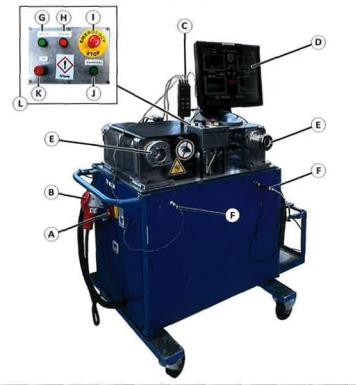
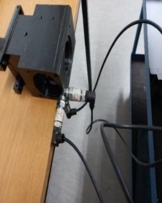
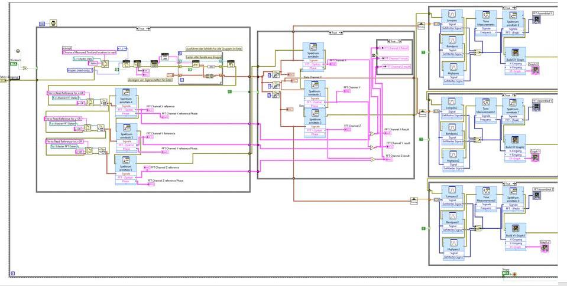

Master's thesis · Vibration & reliability
Vibration-based lifetime estimation of CNC toolholders
Thesis at ESA Eppinger GmbH, a toolholder manufacturer near Stuttgart. I estimated toolholder fatigue life from measured vibration in the frequency domain.
Problem
Acoustic end-of-line checks catch defects late and say nothing about remaining life.
What I did
Designed and built the test setup, recorded 3-axis vibration under operating conditions, and built the PSD-to-damage workflow.
Result
Anomalies and defects were detected more reliably than with conventional acoustic testing.

